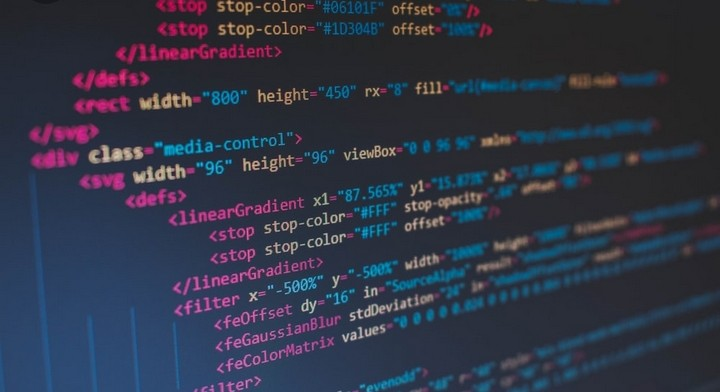

WEB MANIA
Nama saya Sanggit Sukma. Dengan NIM A12.2018.05948. Saya berkuliah di Universitas Dian Nuswantoro.
Web ini merupakan tugas Pemrograman Web yang membahas mengenai "APA ITU HTML".
Sipp..
Okee !
HTML (Hypertext Markup Language) adalah ..
Sebuah bahasa markah yang digunakan untuk membuat sebuah halaman web, menampilkan berbagai informasi di dalam sebuah penjelajah web Internet dan pemformatan hiperteks sederhana yang ditulis dalam berkas format ASCII agar dapat menghasilkan tampilan wujud yang terintegrasi.
Berikut merupakan sejarah perkembangan kode HTML mulai dari versi awal sampai sekarang :
1. HTML Versi 1.0
Bermula pada versi 1.0. Versi 1.0 ini merupakan pionir yang masih banyak kelemahan sehingga tampilannya masih sederhana. HTML versi 1.0 mempunyai kemampuan untuk membuat paragraf, heading, list, hypertext dan cetak tebal atau miring pada teks. Versi 1.0 juga dapat mendukung peletakan gambar atau image pada dokumen tanpa wrapping.
2. HTML Versi 2.0
HTML versi 2.0 mempunyai fitur tambahan yaitu kualitas HTML lebih baik. Versi 2.0 mempunyai kemampuan dalam menampilkan data atau form pada dokumen serta memasukan alamat, nama, dan saran atau kritik. HTML versi 2.0 ini adalah pionir untuk web interaktif.
3. HTML Versi 3.0
Versi 3.0 mempunyai tambahan fitur dengan fasilitas baru yaitu figure. Figure adalah perkembangan dari image yang berfungsi untuk meletakan gambar serta tabel. HTML versi 3.0 juga dapat mendukung adanya rumus matematika pada dokumen. Versi 3.0 sekarang digantikan dengan versi 3.2.
4. HTML Versi 3.2
Versi 3.2 adalah HTML yang paling sering digunakan. Versi ini mempunyai teknologi untuk meletakan teks pada keliling gambar. Sehingga gambar mempunyai latar belakang, frame, style, tabel, dan sebagainya. Versi 3.2 juga dapat menggunakan script untuk mendukung kinerja HTML.
5. HTML Versi 4.0
HTML versi 4.0 mengalami banyak perubahan dari versi sebelumnya. Perubahan tersebut pada perintah HTML yaitu image, tabel, text, link, form dan sebagainya.
6. HTML Versi 4.01
Terdapat juga versi 4.01 yang merupakan perbaikan dari versi 4.0. Versi ini menjadi standar untuk elemen atau atribut pada HTML. Karena sudah memperbaiki kesalahan pada versi sebelumnya.
7. HTML Versi 5.0
HTML versi 5 merupakan prosedur pembuatan tampilan web terbaru dengan penggabungan antara CSS, HTML dan JavaScript. Versi ini dibuat dari informasi bahwa W3C dan IETF membuat versi HTML yang terbaru.
Perkembangan HTML cukup signifikan. Karena W3C terus membuar dan merilis versi HTML terbaru dan update. HTML versi 5.0 menjadi versi paling baik dengan fitur yang lebih lengkap. HTML 5 mempunyai fitur canggih yaitu support pada embed video dan audio. Sehingga Anda bisa menggunakan file video atau audio ke halaman website yang diinginkan.
sumber : https://qwords.com/blog/pengertian-apa-itu-html/